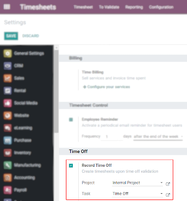
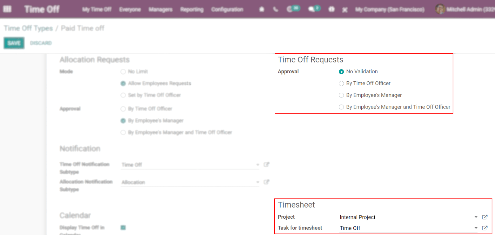
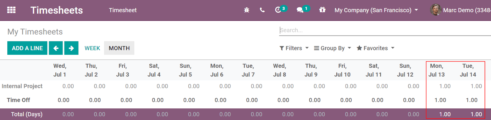
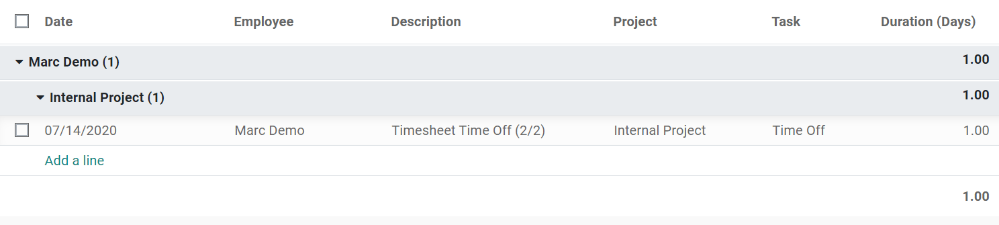

Crear hojas de horas después de la validación del tiempo personal¶
Odoo registra las horas dedicadas en proyectos/tareas de forma automática cuando se solicita tiempo personal. Esto permite un mejor control general sobre la validación de hojas de hora, ya que evita tener que preguntar acerca de horas que el empleado olvidó registrar.
Active el :ref:` modo desarrollador <developer-mode>`, vaya a Hojas de horas, y cambie el Proyecto y la Tarea establecidos de manera predeterminada, si así lo desea.
Vaya a . Seleccione o cree el tipo necesario y decida si desea que las solicitudes se validen o no.
Si no se necesita validación, el tiempo personal solicitado se mostrará automáticamente en la aplicación de Hojas de horas. Si se necesita la validación, el tiempo se asignará de forma automática en cuanto la persona responsable lo valide.
Haga clic en la lupa y coloque el cursor sobre la celda correspondiente para acceder a todos los datos agregados en esa celda (día) y ver los detalles sobre el proyecto/tarea.
